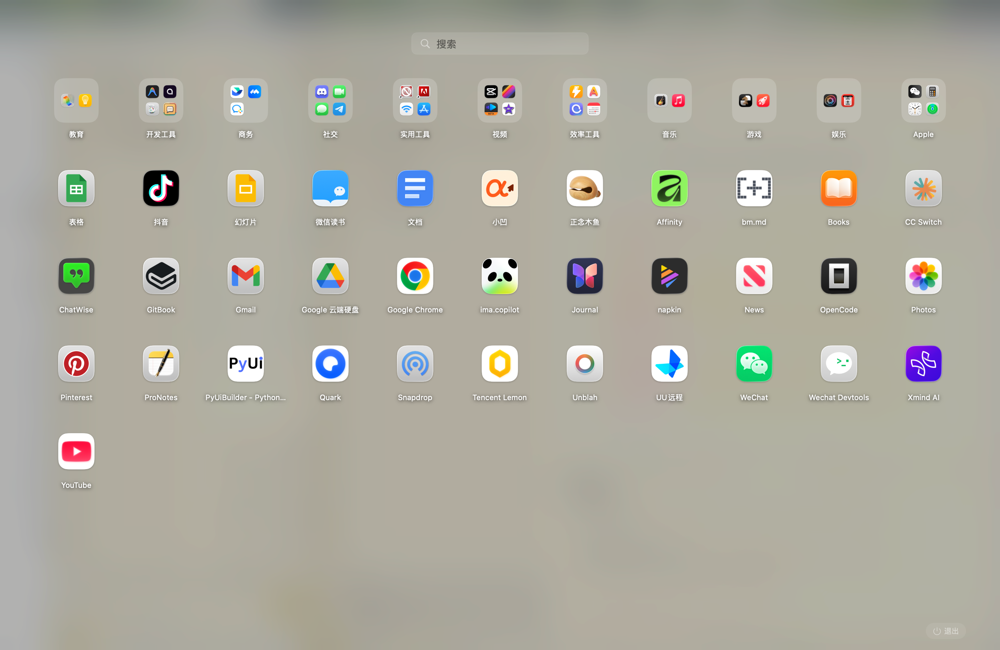

A better Launchpad for macOS. Pure Swift, zero dependencies, lightning fast.

Real-time search with Chinese pinyin initial support. Type and press Enter to launch instantly.
One-click automatic organization by app category. Developer Tools, Productivity, Games — all sorted.
Right-click any app for Show in Finder, Get Info, Remove, or Move to Trash.
Press Cmd+Shift+Space to open from anywhere. Status bar icon for quick access.
Drag one app onto another to create folders. Rename, dissolve, or reorganize anytime.
Automatically detects newly installed and removed apps. Your launcher stays up to date.
| Feature | QuickLaunch | Launchpad |
|---|---|---|
| Pinyin Search | ✓ | ✗ |
| Auto Organize | ✓ | ✗ |
| Usage-based Sorting | ✓ | ✗ |
| Context Menu | ✓ | ✗ |
| Status Bar | ✓ | ✗ |
| Custom Hotkey | ✓ | ✗ |
| Full-screen Blur | ✓ | ✓ |
| Drag & Drop Folders | ✓ | ✓ |
Homebrew (recommended) —
brew install --cask quicklaunch
Or download the DMG directly —